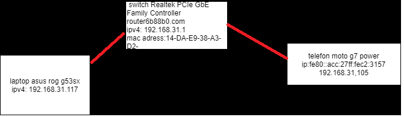
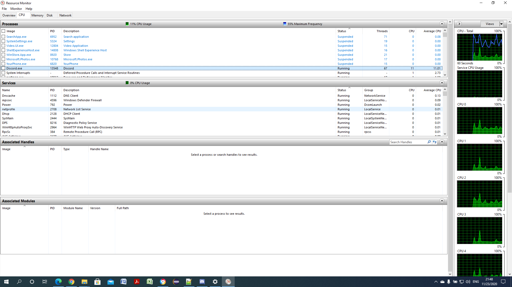
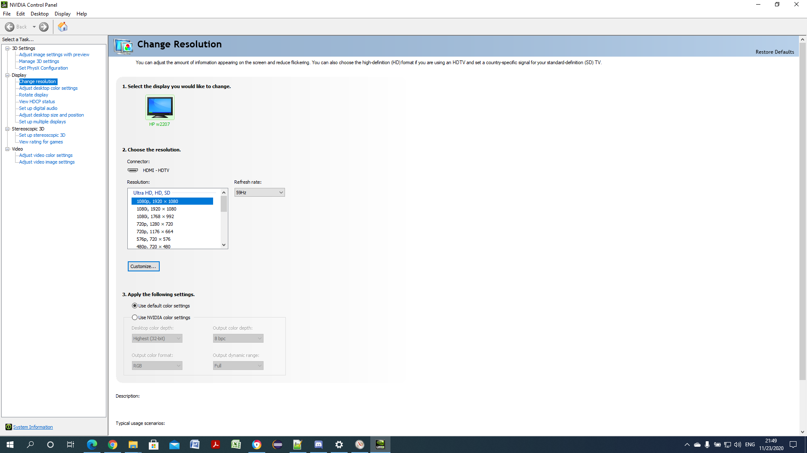
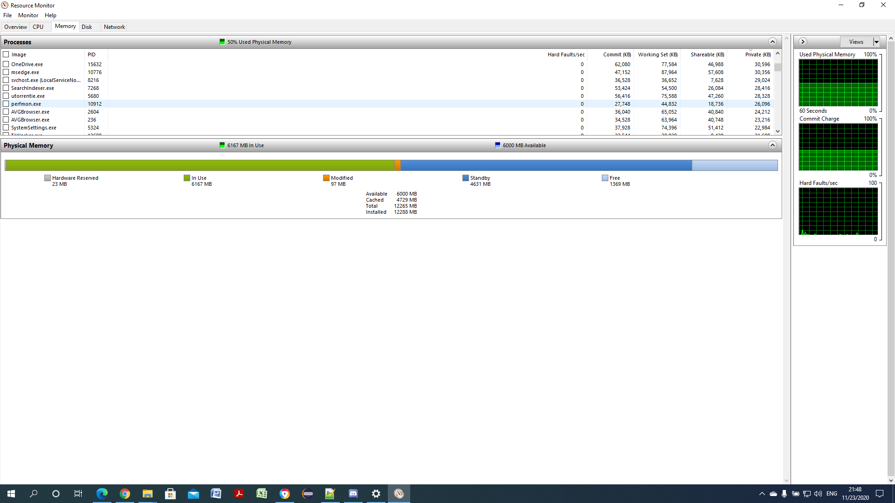

Nume si prenume: Bordea Adelin-Grigore
Date contact:
Numar de telefon:0751912398
E-mail:greg.bordea@yahoo.ro
Componente si caracteristici
denumire
producator
parametri
Intel Core I7 2630QM
Intel
2 ghz, 12 giga ram
NVIDIA GeForce GTX 560M
NVIDIA
2GB GDDR5 VRAM
SSD Kingston KS SSD
Kingston
240GB SA400S37/240G, SSDNow A400, SATA 3.0, 7mm,
Structura retelei

Caracteristici conexiune retea
Conexiune prin switch cu laptopul via cablu retea ethernet
Conexiune cu telefonul prin wifi
Switchul este capabil de a imita un cloud prin conexiunea unui stick
  